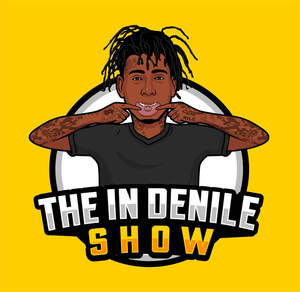

Trade Mark Journal No.2025/051 19 December 2025
UK00004306615 7 December 2025 (9,25,38,41)

- Class 9
- Downloadable podcasts; downloadable digital audio files; downloadable video files; downloadable multimedia files; downloadable webcasts; downloadable computer software for streaming audio and video content; downloadable mobile applications for accessing podcasts; downloadable electronic publications; pre-recorded audio recordings; pre-recorded video recordings; downloadable graphic art files; downloadable music files; downloadable sound recordings.
- Class 25
- Clothing; T-shirts; hoodies; sweatshirts; caps; hats; footwear; headgear; jackets; sportswear; casualwear; branded apparel for promotional purposes.
- Class 38
- Podcast streaming services; audio broadcasting; video broadcasting; webcasting services; streaming of audio content; streaming of video content; telecommunications services for live streaming; transmission of podcasts; digital broadcasting; electronic transmission of data; images; audio and video via the internet; providing user access to digital media platforms; internet broadcasting services.
- Class 41
- Entertainment services in the nature of a podcast series; production of podcasts; providing online non-downloadable audio and video content; live show performances; organising and hosting live events; presentation of live entertainment; educational and entertainment services provided through podcasts; providing online videos not downloadable; entertainment services via social media platforms; publication of electronic content; training and educational talks.
Nile Ranger